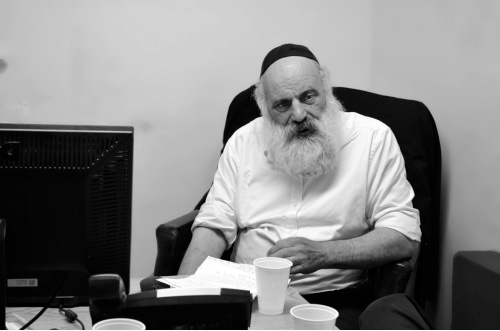
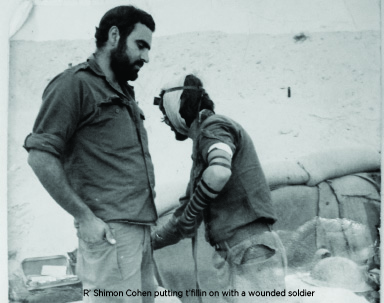
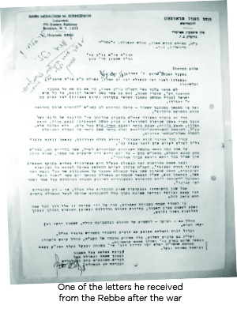

I Returned Whole in Body but Not in Soul
Sergeant Shimon Cohen, who fought in the mortar unit along the Suez Canal, saw horrific scenes which still replay in his head. * After four decades in which he kept his experiences to himself, he shared with Beis Moshiach the instructions, letters and encouragement from the Rebbe that saved his life and gave him the strength to vanquish the enemy and establish a Chassidic family. * An exclusive interview marking forty years since the Yom Kippur War.

The desert cold penetrated his bones, his eyes began to close, and it was with difficulty that he managed to keep himself alert. He had to pay attention to any suspicious movement on the border. Suddenly, beams of light pierced the dark and approached rapidly. He was instantly alert as he tensely followed the light. It was only once he was certain that it was an IDF jeep that he breathed a bit easier.
The vehicle stopped with a screech of its brakes just meters away from his position and two senior officials emerged. The insignia ironed onto their uniforms indicated that they belonged to the highest army ranks, and the equipment they held in their hands looked like night scopes.
The officers climbed the steps of the outpost. “What shall we do?” one asked the other as he glanced at Shimon. “He can remain here, he’s okay. We can rely on him,” replied the other officer.
They set up their equipment and spent a long time scanning a point in the distance. They turned the instrument right and left and whispered to one another. It seemed they were observing Egyptian troops over the border. A few minutes passed and Shimon tried to sit quietly. They soon folded up their equipment and went down to the jeep. “They will yet surprise us,” he heard one of them saying. That sentence has not stopped reverberating in Shimon’s head, even forty years later.
“What a pity they did not listen to the Rebbe’s cries. We lost thousands of soldiers for nothing when it all could have been easily prevented.”
R’ Shimon has witnessed terrible sights. A number of times, throughout the interview, he had to stop talking. At a certain point he shared in a muted voice, “Although I am a Kohen, many times I had to handle the bodies of soldiers that fell in war so they would receive Jewish burial and would not fall into the hands of the Egyptians.
“For forty years I have not spoken about it. This is the first time I’ve agreed to open up and relate what I experienced during the war. Although I returned physically safe and sound, I will never be the same.”
WRITING TO THE REBBE
On the afternoon of the holy day of Yom Kippur 5734/1973, in the Katamon neighborhood of Yerushalayim, the streets were still. R’ Shimon Cohen, together with dozens of other men, sat crowded in a small shtibel used by the Chabad minyan.
Then suddenly, sounds of a commotion could be heard from the street. The street, which was usually quiet on this day, was surprisingly noisy. Trucks rumbled down the narrow streets, announcements could be heard, and people began to gather in clusters. The atmosphere was tense. “War has broken out,” was the news which was passed around.
R’ Shimon received orders on Yom Kippur to return to the army, but he only found out about it after the fast.
“Despite the hullabaloo in the street which we could hear in shul, I concentrated on the davening. It was only after Havdala that I returned home to discover a draft notice on my door for immediate mobilization. My wife was still in shul and when she returned I told her about the latest developments.”
His draft order was met with mixed feelings. Defending the Jewish people at a time like this was an obligation, but he had two little children at home, the oldest only a year and a half, and to leave his wife at home for a protracted period and who knew when and whether he would return altogether, well, that wasn’t easy. Who would help her?
As a Chassid, he knew that before going to war he had to write to the Rebbe and ask for his bracha.
“Early the next morning, after mikva and davening, I sat down to write a letter to the Rebbe. I asked for a bracha that I return safely from war. At that time, I had no idea how many miracles I would need in order for that to happen.”
It was the first of a long series of letters that he wrote to the Rebbe.
“Several times throughout the war I wrote detailed letters to the Rebbe in which I poured out whatever was on my mind and heart, the battle situation, the feelings of the soldiers, and about the losses and victories we experienced.”
HEADING FOR THE FRONT

“The missile was guided by a network of wires and they were able to direct the missile along the entire route of its flight. The missile was very powerful and just one missile was enough to rip a tank to shreds and turn it into a fireball. The Egyptians also used these missiles against the convoys that brought equipment and soldiers to the battlefield.
“Our first response to this missile, in order to stabilize the positions of our forces in the area, was through mortar fire. Their advantage over the Saggers was that they flew on a steep arc, so they did not disclose the position of the shooter. Since I had amassed a lot of experience in using mortars, I was selected to train the soldiers in how to use these weapons.”
After two days in which he was in the Tzrifin camp, he was sent to a base near Kiryat Malachi and from there, straight to the battlefield. In his initial army service he had fought in a support mortar unit on the southern front which bordered on Egypt, and now he was sent back there. “A soldier who knows the south, fights in the south,” said his commanders.
“The atmosphere among the soldiers was very tense,” recalls R’ Shimon. “We had heard that many soldiers had already fallen and about the confusion and lack of order in the army’s response to the Arab attack. Fear was in the air, fear of the unknown. We all knew that we were going to fight now and nobody knew who would return.
“When I reached the battlefield I was immediately attached to a mortar unit. We received orders to use all the ammunition we had in order to get the Egyptian tanks to retreat. We fired every kind of rocket at the Egyptians. We used all the means at our disposal in order to halt the rapid advancement of the Egyptian armored corps into Israel.
“On one of the first days of war, we shot and shot for hours, mortars of all kinds. The mortar tube turned red from the heat of so much use and soldiers were afraid to go near it. At the end of an exhausting night, the soldiers calculated that the value of the mortars we shot in one day was over $100,000 (in the dollar value of those days) and that was just my unit.”
MIRACLES EVERY DAY
Forty years have passed since those bleak days.
“The very fact that I am alive is thanks to a series of miracles, thanks to the brachos I received from the Rebbe. During the war I was mostly on the Bar Lev Line. That was a chain of fortifications built by Israel along the eastern coast of the Suez Canal after it captured the Sinai Peninsula from Egypt during the 1967 Six-Day War.
“One day I was sent to the Havraga stronghold, which was located in a central part of the canal. Near this stronghold was a fort called Televizia which was a preferred target of the Egyptians and was shelled constantly by missiles and mortars. After hours of artillery bombardment the soldiers there were exhausted and asked us to take over.”
Despite the obvious danger, Shimon and his unit agreed to move from Havraga which was relatively quiet, to Televizia which was besieged.
“We exchanged positions and now it was our turn to absorb the Egyptian fire. A few minutes after we relocated to the new position the Egyptian bombardment intensified, but inexplicably, they directed most of their fire at Havraga, where we had been just a few minutes earlier. The force of the shelling demolished the stronghold and not a single soldier remained alive.
“We then received an order to advance in the direction of the canal. I went over to the officer who gave the order and asked which road to take, to use the “plastic roads” or to continue across the sand. The regular asphalt roads heated up quickly in the desert sun and burned the wheels on the trucks, which is why the IDF paved certain roads with substances that could withstand the heat. These roads were referred to as plastic.
“The officer gave me a strange look and asked me, ‘Didn’t you hear? The plastic roads are already in their hands.’ As we advanced through the sand, an Egyptian commando unit was waiting in ambush. Despite the heavy losses my unit sustained, I was saved.
“A few months later, I felt a tap on the back and a voice I did not recognize asked, ‘You’re still alive?!’ When I turned around I saw the same officer who had given us the order. He explained his amazement and said, ‘We sent you there even though we knew that the chance of your returning was very slim, but we had to take this step in order to halt the advance of the Egyptians.’
“Another time, the Regiment Commander Rabinowitz prepared the entire brigade to advance on the Budapest Fort. Fort Budapest or, as it was known, Motti Ashkenazi’s position (because it was under his command), was the northernmost stronghold on the Bar Lev Line. It was located on the Mediterranean Sea and, due to its isolated location on the edge of the sea, it suffered from flooding and the earth was muddy. Its location and conditions made it difficult to control. The Egyptians, who saw our advance toward it, shot mortars and missiles to get rid of us, but we kept advancing, slowly and carefully.
“Close to two in the morning we arrived in the area and prepared for the attack. Rabinowitz announced that we had two hours to sleep and at precisely four o’clock we would begin the attack. We all lay on the ground, our eyes closed but it was hard to sleep. We were very afraid for we all knew how many men we could lose in the attempt to retake the position. Two hours passed, then three, and there was no signal to attack. In the morning we found out that the army brass was not willing to take additional chances and lose soldiers and so the operation was canceled. You could say that my life was saved once again.
“In the army it is common for nicknames to stick. One of the soldiers was nicknamed Poodle. He was a nervous guy and I guess that’s why he was given this name. One night, Poodle and I were sitting in a half-track on guard. I suddenly began feeling uneasy about the place we were located, for no apparent reason. I said to Poodle, ‘Listen, I sense this is not a good spot. Come, let’s move fifty meters to the left.’
“We moved and a few minutes later a powerful sound of mortars shook the area. Missiles fell precisely on the spot where we sat a few minutes earlier. You can imagine where I’d be today if I had stayed there.
“At a certain point, the Regiment Commander was exchanged for a young officer by the name of Shechter from Kibbutz HaChotrim. He fought with mesirus nefesh and broke through the ranks of the enemy with miraculous success. Under his command, we rained hellfire on the Egyptians and finally, finally managed to move forward toward the canal.
“When our forces crossed the Suez Canal, we saw hundreds of Egyptian bodies floating on the water. When I saw this, I thought how the verse from the Song of the Sea was being fulfilled once again. The Egyptian army which had pursued the Jewish people had drowned, just like their ancestors.”
MIVTZA TEFILLIN SAVES LIVES
“As I related, before I went to war I wrote a letter to the Rebbe in which I asked for a bracha that I return safe and sound. I first saw the Rebbe’s response, which was mailed to my home, a few weeks later when I was on a short furlough. The Rebbe responded with many brachos and good wishes.
“Upon returning to the front, I took the letter with me. When I happened to see the commander of the south, Arik Sharon, I told him about the letter. He took it from me and read it line by line. When he finished, he folded it and put it in his pocket and said, ‘I’ll keep it.’
“In the letters that I received from the Rebbe during the war, he told me to do Mivtza T’fillin. I kept busy circulating among the soldiers and offering t’fillin. At first, I was a little shy about approaching soldiers and offering t’fillin. I did not know how soldiers at war would react to this suggestion. In addition, the intense schedule of fighting did not always allow for it. Then something happened which did away with my reticence and spurred me on to offer t’fillin to everyone.
“In the unit with me was a soldier who had a shell explode meters away from him. Shrapnel entered his head. Fortunately, he wasn’t seriously injured. If the shrapnel would have entered a few millimeters further, the damage would have been irreversible.
“In the days following the attack, this same soldier came over to me and asked that I put t’fillin on with him. His request made me think: Did I have to wait for him to come over to me? What about those soldiers who don’t come over? Why should they miss out? After that, I went around and tried to put on t’fillin with whomever I could.”
“My family sent me special, small t’fillin, that were written by the Yerushalmi scribe, R’ Shaul Sharabani, the son of the famous mekubal, R’ Yehoshua Sharabani. I wrapped them in a plastic bag and put them in my pocket so that even when we went to fight, I could carry them with me and offer them to every soldier.
“The Rebbe emphasized many times that in order to be victorious in battle you need to use a special weapon, a weapon to which the enemy has no response. These are the t’fillin about which it says, ‘and all the nations of the world will see the name of Hashem called upon you and they will fear you.’ I tried to be involved in Mivtza T’fillin throughout the war.
“I once went over to an officer who was in charge of a tank unit and offered him to put on t’fillin. He looked at me scornfully and said, ‘Scram.’ Another officer who was in the area went over to him and whispered something in his ear and the same disdainful officer called me right back and rolled up his sleeve for t’fillin. When he finished he said, ‘Do you know why I put on t’fillin now? When I see a religious soldier fighting for our nation, it’s only because of this that I put on t’fillin.’ After that, whenever he saw me, he put on t’fillin.
“I still try to be active in mivtza t’fillin. Every day, after I finish working at Yeshivat Porat Yosef in the Jewish Quarter, I go to the Kosel and join my brother Dovid, one of the veterans at the Chabad t’fillin stand. We put t’fillin on many Jews who visit the Kosel.
“Another soldier who served in my unit belonged to a hesder yeshiva. We learned together regularly. He taught me Mishna Brura and I taught him the daily Chitas so that even during wartime, I was able to spread the wellsprings.
“After the first twenty bloody days of war in which we managed to rout the Egyptian army beyond the canal, we remained there to guard the Line. At this time, the Rebbe told the Chassidim to reach all the soldiers on the battlefield and to bring them a message of encouragement and bitachon. Many mitzva tanks went out to bring joy to the soldiers.
“The army asked the Chassidim to wear IDF uniforms and they supplied them. On many occasions the tanks would appear, and the soldiers who eagerly awaited the joy and good cheer during those difficult times, gathered around the Chassidim, said l’chaim, and heard encouraging messages from the Rebbe. I remember in particular the Chassidim, R’ Meir Friedman and R’ Shmuel Chefer who danced and made the soldiers rejoice.
“One of the officers said a line that expressed the positive feelings of the soldiers toward Chabad, ‘Here, on the front, in the line of fire, not even a dog comes here. We haven’t seen any members of the Knesset, any ministers, any public figures. Just you Chabad, only you!’
“I received sichos and telegrams of encouragement which the Rebbe sent to the residents of Eretz Yisroel through these Mitzva Tanks. I passed along and publicized these messages to all the soldiers. Every Shabbos there was a chaplain who would instruct me to say a d’var Torah and to address the soldiers and I would repeat sichos from the Rebbe.
“The Regiment Commander of the battalion in which I served was a kibbutznik by the name of Rabinowitz. He loved me and although he was in charge of an entire battalion, he was especially friendly with me and often asked me to join him. Because of my beard, I was nicknamed Abu-Zakein. In a candid moment Rabinowitz said to me, ‘Abu-Zakein, do you know why I love you? Because I see how consistent you are, how devoted you are. You don’t make allowances for yourself. You daven every t’filla and don’t eat without washing your hands. I admire that.’ It was a big kiddush Hashem to hear this from him.
“I used my good relationship with Rabinowitz to help other soldiers. As Sukkos approached, some religious soldiers came over to me and asked how we would manage to eat without a kosher sukka. I spoke to Rabinowitz and asked him to allow us to build a sukka. Instead of responding, he dismissed me scornfully. I did not understand why his attitude toward me had suddenly changed but I kept quiet. Then I noticed a tow truck dragging shipping crates and other soldiers building walls. An Arab was sent to cut down palm leaves and that is how, in the middle of the war, a kosher sukka was built. That Sukkos we celebrated in the same desert where our ancestors sat in sukkos. And not only did we have a sukka but we also had the four minim. During Yom Tov and Chol HaMoed many soldiers said the bracha on the four minim.”
DAILY LETTERS TO THE REBBE 
The Rebbe asked for detailed reports.
“As a soldier of the Rebbe on the battlefield, I felt I had to report to the Rebbe. Whenever I had a free moment I sat down and wrote to the Rebbe about everything I was experiencing.
“After weeks of no rest, there were short respites and I used the breaks to circulate among the soldiers and ask their names and their mothers’ names so they could receive a bracha from the Rebbe. I figured, why just ask for brachos for myself? We all need to return in peace. I included these names in the letters I sent to the Rebbe. I wrote my home address on all these letters so the Rebbe’s responses would go directly to my house.
“In addition to the names of the soldiers which I wrote to the Rebbe myself, I encouraged many soldiers to correspond with the Rebbe directly and ask for a bracha, advice and direction in life. Since I sent my letters to the Rebbe through the military mail system, I advised the soldiers to do likewise.
“The soldiers liked the idea and sent many letters to the Rebbe until the clerk in charge of the mail service came with a bunch of envelopes and yelled, ‘What’s with all these letters to America? Stop sending letters to the Lubavitcher Rebbe already!’”
Against the backdrop of the horrific reports and terrible sights that followed them throughout, R’ Shimon derived much encouragement from the open miracles he heard about from those soldiers who received answers from the Rebbe.
“One of the soldiers told me in frustration, that the marital harmony situation back at home had deteriorated to an extreme, he and his wife constantly fought, and he was afraid they had reached a point of no return. I tried to encourage him and suggested that he write to the Rebbe for a bracha. He immediately sat down and wrote about his situation at length. Just a few days passed and he received the Rebbe’s response: Don’t worry, during wartime shalom bayis improves. This greatly encouraged him.
“At the end of the war, when victory was assured and the soldiers in the reserves were allowed to return home, I asked Rabinowitz whether he wanted me to ask the Rebbe for a bracha for him. He didn’t even wait until I finished my sentence; he quickly said all was well and he didn’t need a bracha from the Rebbe.
“From his tone it seemed to me that although he claimed everything was fine, it wasn’t quite so. I pleaded with him to ask for a bracha and explained that even in the most difficult situations, the Rebbe could help. After beseeching him again and again, he whispered, ‘Abu-Zakein, listen. I am going to tell you something personal now, but you have to promise not to tell a soul.’ Of course I agreed and then he told me, ‘My wife and I are genetically incompatible and this is why our children are not healthy and don’t develop. Ask the Rebbe to bless us so that we have a healthy child.’
“I asked him for his home address and wrote to the Rebbe on his behalf. Several months later, Rabinowitz called me and said he had received a letter from the Rebbe with detailed instructions about what to do to merit a healthy child. He consulted with some friends on the kibbutz and he decided to do as the Rebbe said. I was later informed that he and his wife had a healthy son, thanks to the Rebbe’s bracha.
“For many years after the war I saw soldiers who had written to the Rebbe who then became more involved in Jewish practice.”
***
Although he had started corresponding with the Rebbe from the age of twelve, for over thirty years, he had not seen the Rebbe face to face:
“It was first in Tishrei 5750 that I had the z’chus to see the Rebbe. When it was my turn to pass by the Rebbe, my emotions overflowed and I could barely manage to introduce myself as Shimon Cohen from Yerushalayim.
“The Rebbe gazed at me with sparkling eyes and with a fatherly smile he said, ‘Finally, you’ve arrived!’”
Yisroel Lapidot helped
prepare this article
Beis Moshiach (staff). "I Returned Whole in Body but Not in Soul." Beis Moshiach, no. 909 (December 30, 2013).